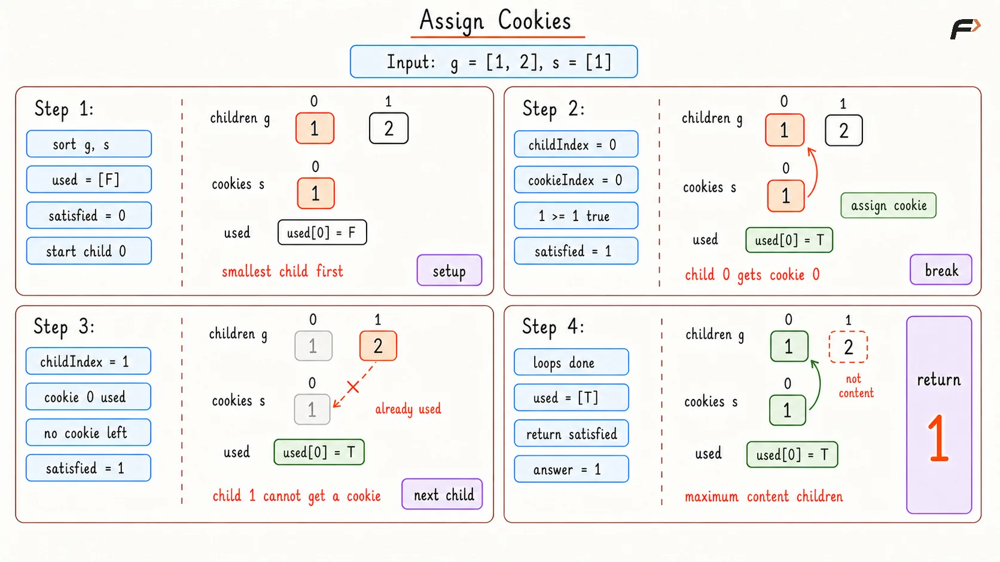
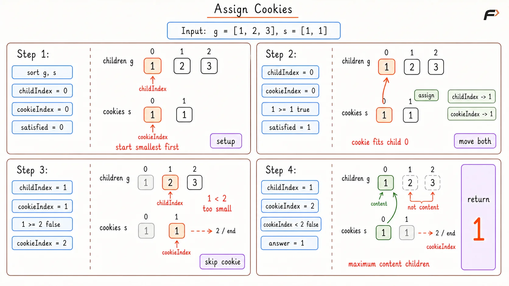

Assign Cookies: Greedy Algorithm and Solution
Assume you are an awesome parent and want to give your children some cookies. However, you can only give each child at most one cookie.
Every child i has a greed factor g[i], which is the minimum size of a cookie that the child will be content with. Every cookie j has a size s[j]. If the cookie size is greater than or equal to the child's greed factor (s[j] >= g[i]), you can assign the cookie j to the child i, and the child will be content. Your goal is to output the maximum number of content children you can achieve.
Example 1
Input: g = [1, 2, 3], s = [1, 1]
Output: 1
Explanation: You have 3 children and 2 cookies. The greed factors of the 3 children are 1, 2, and 3. You have 2 cookies, both of size 1. You can only make the first child content because their greed factor is 1. The other children need larger cookies.
Example 2
Input: g = [1, 2], s = [1, 2, 3]
Output: 2
Explanation: You have 2 children with greed factors 1 and 2. You have 3 cookies of sizes 1, 2, and 3. You can satisfy both children perfectly by giving the size 1 cookie to the first child, and the size 2 (or 3) cookie to the second child.
Brute Force
If you were handing out cookies without planning ahead, you would probably look at the first child, dig through your cookie jar until you found a cookie big enough for them, hand it over, and then move to the next child. To ensure we do not give the same cookie to two different children, we need to keep track of which cookies have already been eaten.
Algorithm
Sort the greed array so children are checked from easiest to hardest to satisfy. This makes the matching safer because smaller greed children are handled first.
Sort the cookie array so the first valid unused cookie found is also the smallest useful cookie for that child.
Keep a
usedarray to remember which cookies have already been assigned. This is needed because one cookie cannot be given to more than one child.For every child, scan all cookies from left to right and look for the first unused cookie whose size is at least the child greed factor.
If such a cookie is found, mark it as used and increase the satisfied count.
After all children are checked, return the satisfied count.
Dry Run

Assign Cookies Brute Dry Run
Solution
#include <bits/stdc++.h>
using namespace std;
class Solution {
public:
/*
* Finds the maximum number of satisfied children
* by checking cookies for each child one by one.
*/
int findContentChildren(vector<int>& g, vector<int>& s) {
sort(g.begin(), g.end());
sort(s.begin(), s.end());
// This stores whether a cookie has already been assigned.
vector<bool> used(s.size(), false);
// This stores how many children have been satisfied so far.
int satisfiedChildren = 0;
for (int childIndex = 0; childIndex < g.size(); childIndex++) {
for (int cookieIndex = 0; cookieIndex < s.size(); cookieIndex++) {
// A cookie can be used only if it is unused
// and large enough for the current child.
if (!used[cookieIndex] && s[cookieIndex] >= g[childIndex]) {
used[cookieIndex] = true;
satisfiedChildren++;
break;
}
}
}
return satisfiedChildren;
}
};
// Driver code starts
int main() {
vector<int> g = {1, 2, 3};
vector<int> s = {1, 1};
Solution sol;
cout << sol.findContentChildren(g, s) << endl;
return 0;
}Complexity Analysis
Time Complexity: O(n * m + n log n + m log m), where n is the number of children and m is the number of cookies. The nested scanning takes O(n * m), and sorting both arrays also takes time.
Space Complexity: O(m), because a used array is stored for the cookies.
Optimal Approach
The key observation is: If the smallest available cookie cannot satisfy the least greedy remaining child, then that cookie cannot satisfy any other remaining child either.
Why? Because all other remaining children have greed factors greater than or equal to this child. So a cookie that is too small can be skipped immediately.
After sorting both arrays, keep one pointer on the current child and one pointer on the current cookie. If the cookie is large enough, assign it and move to the next child. If it is too small, move to the next cookie.
This avoids the repeated scanning used in brute force. Each child and each cookie is visited at most once after sorting.
Algorithm
Sort the greed array so the least greedy child comes first. This helps satisfy easier children before moving to harder ones.
Sort the cookie array so cookies are tried from smallest to largest. This helps use the smallest possible cookie for every successful match.
Keep
childIndexfor the current unsatisfied child andcookieIndexfor the current unused cookie.If the current cookie is large enough for the current child, assign it. Then move both pointers because that child is satisfied and that cookie is used.
If the current cookie is too small, move only the cookie pointer. This is safe because the cookie cannot satisfy the current child or any greedier child.
Stop when all children are satisfied or all cookies are used, then return the satisfied count.
Dry Run

Assign Cookies Optimal Dry Run
Solution
#include <bits/stdc++.h>
using namespace std;
class Solution {
public:
/*
* Finds the maximum number of children
* that can be satisfied using greedy matching.
*/
int findContentChildren(vector<int>& g, vector<int>& s) {
sort(g.begin(), g.end());
sort(s.begin(), s.end());
// This pointer tracks the next child waiting for a cookie.
int childIndex = 0;
// This pointer tracks the next unused cookie.
int cookieIndex = 0;
// This stores how many children have been satisfied so far.
int satisfiedChildren = 0;
while (childIndex < g.size() && cookieIndex < s.size()) {
// If this cookie is large enough,
// it can satisfy the current child.
if (s[cookieIndex] >= g[childIndex]) {
satisfiedChildren++;
childIndex++;
cookieIndex++;
} else {
// This cookie is too small for the least greedy
// remaining child, so it cannot help anyone later.
cookieIndex++;
}
}
return satisfiedChildren;
}
};
// Driver code starts
int main() {
vector<int> g = {1, 2, 3};
vector<int> s = {1, 1};
Solution sol;
cout << sol.findContentChildren(g, s) << endl;
return 0;
}Complexity Analysis
Time Complexity: O(n log n + m log m), where n is the number of children and m is the number of cookies. Sorting both arrays dominates the runtime.
Space Complexity: O(1) because only constant space is used.
Interview follow-up Questions
If you sort in descending order (largest cookies and greediest children first), the logic changes entirely. While you can solve it backward, ascending order is logically simpler. By handing out the smallest valid cookies to the least greedy children first, you strictly reserve your massive cookies to fulfill the greediest children later in the line.